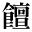
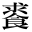
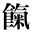
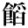
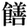

●三遊亭圓朝、鈴木行三校訂『業平文治漂流奇談』
●南方熊楠『十二支考（１）虎に関する史話と伝説民俗』
●夏目漱石『吾輩は猫である』（新字・新仮名）
●尾崎紅葉『金色夜叉』
●桑原隲蔵『秦始皇帝』
●ドストエウスキー作、森鴎外（森林太郎）訳『鰐』
●中島敦『南島譚・幸福』
●森鴎外『青年』
●アンリ・ド・レニエエ作、森鴎外（森林太郎）訳『復讐』
|  | 1_94_10.gif |
●森鴎外『山椒大夫』 |
|  | 2_92_54.gif |
●尾崎紅葉『金色夜叉』 |
| 2_92_63.gif |
●岩野泡鳴『戦話』 ●三遊亭圓朝、鈴木行三校訂『業平文治漂流奇談』 |
|
|
|
2_92_64.gif |
●幸田露伴『花のいろいろ』 |
|  | 2_92_67.gif |
●夏目漱石『吾輩は猫である』（新字・新仮名） ●南方熊楠『十二支考（１）虎に関する史話と伝説民俗』 |
|  | 2_92_68.gif |
●芥川龍之介『本所両国』 ●夏目漱石『吾輩は猫である』（新字・新仮名） |
|  | 2_92_71.gif |
●夏目漱石『吾輩は猫である』（新字・新仮名） |
|
|
2_92_73.gif |
●上田敏訳詩集『海潮音』 ●尾崎紅葉『金色夜叉』 ●桑原隲蔵『秦始皇帝』 ●ドストエウスキー作、森鴎外（森林太郎）訳『鰐』 ●中島敦『南島譚・幸福』 ●森鴎外『青年』 ●アンリ・ド・レニエエ作、森鴎外（森林太郎）訳『復讐』 |